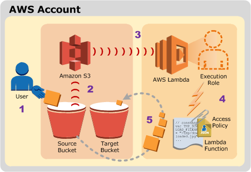
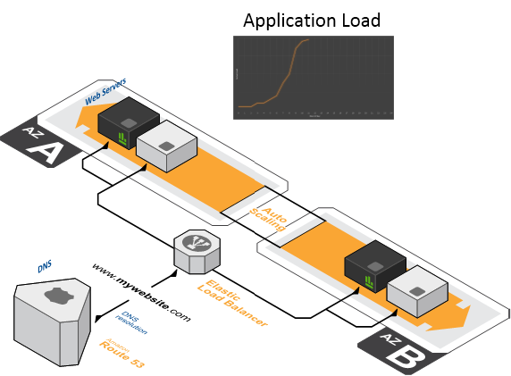
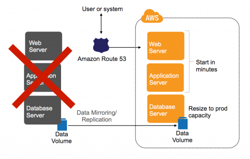

Event Driven Infrastructure
Shiva N / @shivamaan
A banana warehouse at the zoo
Run an banana inventory every hour |
Give me five bananas |
Monkey took five bananas |
Event Driven Architecture
5 Characteristics
- Real time (or near real time)
- Push Notifications
- One-way 'fire-and-forget'
- Immediate action at event consumer
- Informational (“monkey took bananas”) and not commands (“perform banana inventory”)
Why?
- Decouple responsibilities
- Communicate by triggering events
- Scale out components horizontally
- Higher responsiveness
- High availability and resiliency
What about Infrastructure?
Automated Configuration Management
- Puppet
- Chef
- Ansible
- Salt
- etc...
Infrastructure as Code
AWS Cloudformation + Custom Resources = No Limits
Stackstorm
Homegrown tools/scripts
AWS Lambda
A whole new world...
What is AWS Lambda? |
- A zero-administration compute platform
- Stored procedures for the cloud
- Function-as-a-Service (NodeJS/Java)
- Event driven from other services
- …or triggered externally and even chained
What events can your infrastructure react to ?
Simple Event
Spiky Load Events
|  |
|
Component Failure Event
- EC2 Auto Healing
- Service discovery + Container recycling
- SQS Design pattern
Disaster Event
|  |
Security Events
- DDoS attack
- Instance compromise
Streaming Events
Complex Events
- Intelligent build pipelines
- Event Observer Pattern
Sentient Events ?!
How does this affect "the DevOps"?

Operational Lifecycle
- Immutable infrastructure
- No patching or in place deployments
Serverless architectures
Monitoring and Metrics
- Centralized logging
- Log Analytics
- Build metrics, application metrics, customer experience metrics instead of CPU, memory and OS metrics
- Event Storms
Is this a scary path?